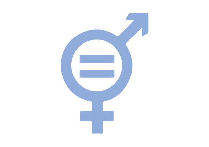

Het doel van het spel is bewustwording en empathie creëren over mensen labelen en het voorkomen van labelen door middel van een interactieve methodologie. Het spel legt de focus op verschillende onderwerpen zoals gendergelijkheid, feminisme, internationale sociale bewegingen, etc. en verschillende concepten zoals inclusie, gender, rechtvaardigheid, etc.
Het spel wordt gespeeld door groepen van 5 tot 8 mensen. Wanneer een groep groter is, moeten de spelers zich verdelen in gelijke teams van minimum 5 tot maximum 8 spelers. Elke team speelt het spel afzonderlijk van de andere groepen.

Benodigdheden PER TEAM
- Een laptop of desktop met internetverbinding
- Een pen
- Post-its
- Virtual Reality bril
Bekijk deze link voor het in elkaar zetten van de kartonnen VR bril
Spelregels

Elk team kiest één gastheer van het spel die verantwoordelijk is voor het volgen van de regels en het besturen van de computer gedurende het spel.
Om het spel te starten, bekijkt de hele group de start video
De gastheer geeft het aantal spelers van zijn team in.
Dit spel volgt de algemene regels van een bordspel
- De jongste speler mag beginnen.
- Vervolgens wordt er met de klok mee gespeeld.
- Wanneer je aan de beurt ben draai je aan het rad. Het getal waar het rad op eindigt bepaalt hoeveel stappen je pion zal zetten.
- Wanneer je pion op een bepaald vakje komt, volg je de opdrachtvan dat vakje.
- Na het correct uitvoeren van de opdracht is het de beurt aan de volgende speler.
Wanneer elke speler op het laatste vakje is geland, zal er een link op het scherm verschijnen. Deze link brengt je naar een reflectie over het spel in zijn geheel. Bespreek de reflectievragen met alle teams samen.
Opdrachten
Als de pion van een speler op de informatie vakje terechtkomt, zal er automatisch een willekeurige informatie kaart verschijnen op het bordspel. Lees de informatie op deze kaart luidop voor aan de rest van de spelers. Na het voorlezen, is het de beurt aan de volgende speler om zijn pion te verplaatsen.
Als de pion van de spelers op de reflectie vakje terechtkomt, zal er automatisch een willekeurige reflectie kaart verschijnen op het bordspel. Lees deze zorgvuldig luidop. De speler die op de reflectie vakje terecht kwam, beantwoordt de vraag. De anderen luisteren. Na het beantwoorden van de vraag, is het de beurt aan de volgende speler om zijn pion te verplaatsen.
Als de pion van de speler op de question/ vraag vakje terechtkomt, zal er automatisch een willekeurige vraag kaart verschijnen op het bordspel. Lees de vraag hardop voor. De speler die op de vraag vakje terecht kwam, beantwoordt de vraag. De anderen luisteren. Na het beantwoorden van de vraag, is het de beurt aan de volgende speler om zijn pion te verplaatsen.
Als de pion van een speler op de information vakje terechtkomt, zal er automatisch een willekeurige informatie kaart verschijnen op het bordspel. Lees de informatie op deze kaart luidop voor aan de rest van de spelers. Na het voorlezen, is het de beurt aan de volgende speler om zijn pion te verplaatsen.
Als de pion van een speler op de information vakje terechtkomt, zal er automatisch een willekeurige informatie kaart verschijnen op het bordspel. Lees de informatie op deze kaart luidop voor aan de rest van de spelers. Na het voorlezen, is het de beurt aan de volgende speler om zijn pion te verplaatsen.